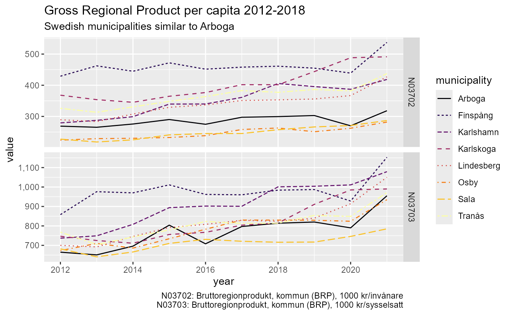

rKolada is an R package for downloading,
inspecting and processing data from Kolada, a Key Performance Indicator
database for Swedish municipalities and regions. This vignette provides
an overview of the methods included in the rKolada package
and the design principles of the package API. To learn more about the
specifics of functions and to see a full list of the functions included,
please see the Reference
section of the package homepage or run ??rKolada. For a
quick introduction to the package see the vignette A quick start guide to rKolada.
NOTE: All metadata and data labels in Kolada are written in Swedish only.
The design of rKolada functions is inspired by, and are
supported by, the design and functionality provided by several packages
in the tidyverse family. It is thus recommended that you
install the tidyverse package before installing
rKolada:
install.packages("tidyverse")
install.packages("rKolada")Kolada, a Key Performance Indicator database for Swedish municipalities and regions
The Swedish Municipalities and Regions Database Kolada is a openly accessible,
comprehensive database containing over 4,000 Key Performance Indicators
(KPIs) for a vast number of aspects of municipal and regional
organisations, politics and economic life. The rKolada R
package provides an interface to R users to directly download, explore,
and simplify metadata and data from Kolada.
To get started with Kolada you might want to visit its homepage
(Swedish-only) or read through the REST API documentation on
Github. However, you can also use the rKolada package
to explore data without prior knowledge of the database.
The data model
Data in Kolada are stored along three basic dimensions:
- A KPI ID
- A point in time (year)
- A municipality/region/ ID
When downloading data, the user needs to specify search parameters for at least two of these three basic dimensions. (The Kolada API documentation also specifies a fourth basic dimension: gender. However, data for all genders is always automatically downloaded when available.) The parameters can be a single, atomic value or a vector of values.
Also, the Kolada database proves useful groupings of municipalities and KPIs that can be used for further exploration, or to create unweighted averages. Lastly, some KPIs are also available for Organizational units (OUs) within municipalities, e.g. a school, an administrative subdivision or an elderly home.
Downloading data
If the user already has knowledge of the IDs of the KPIs and/or
municipalities they want to download, this can be done using the
function get_values(). For instance, if you want to
download all values for the KPI N00945 (“Tillfälliga
föräldrapenningdagar (VAB) som tas ut av män, andel av antal dagar (%)”)
for Sweden’s three most populous cities; Stockholm (id
"0180"), Gothenburg (Swedish: Göteborg;
"1480") and Malmö ("1280"):
#> kpi municipality_id year count gender status value municipality
#> 1 N00945 0180 1996 1 T NA Stockholm
#> 2 N00945 1280 1996 1 T NA Malmö
#> 3 N00945 1480 1996 1 T NA Göteborg
#> 4 N00945 0180 1997 1 T NA Stockholm
#> 5 N00945 1280 1997 1 T NA Malmö
#> 6 N00945 1480 1997 1 T NA Göteborg
#> 7 N00945 0180 1998 1 T 30.41209 Stockholm
#> 8 N00945 1280 1998 1 T 26.69198 Malmö
#> 9 N00945 1480 1998 1 T 30.45307 Göteborg
#> 10 N00945 0180 1999 1 T 30.62354 Stockholm
#> 11 N00945 1280 1999 1 T 26.84941 Malmö
#> 12 N00945 1480 1999 1 T 32.00700 Göteborg
#> 13 N00945 0180 2000 1 T 31.32960 Stockholm
#> 14 N00945 1280 2000 1 T 28.36723 Malmö
#> 15 N00945 1480 2000 1 T 33.23952 Göteborg
#> 16 N00945 0180 2001 1 T 31.90901 Stockholm
#> 17 N00945 1280 2001 1 T 29.14839 Malmö
#> 18 N00945 1480 2001 1 T 34.34883 Göteborg
#> 19 N00945 0180 2002 1 T 33.13784 Stockholm
#> 20 N00945 1280 2002 1 T 30.18228 Malmö
#> 21 N00945 1480 2002 1 T 35.15515 Göteborg
#> 22 N00945 0180 2003 1 T 33.82520 Stockholm
#> 23 N00945 1280 2003 1 T 29.88630 Malmö
#> 24 N00945 1480 2003 1 T 35.55795 Göteborg
#> 25 N00945 0180 2004 1 T 34.21939 Stockholm
#> 26 N00945 1280 2004 1 T 31.21299 Malmö
#> 27 N00945 1480 2004 1 T 35.51597 Göteborg
#> 28 N00945 0180 2005 1 T 35.00610 Stockholm
#> 29 N00945 1280 2005 1 T 32.26879 Malmö
#> 30 N00945 1480 2005 1 T 36.71541 Göteborg
#> 31 N00945 0180 2006 1 T 35.78205 Stockholm
#> 32 N00945 1280 2006 1 T 33.89914 Malmö
#> 33 N00945 1480 2006 1 T 37.20446 Göteborg
#> 34 N00945 0180 2007 1 T 35.61412 Stockholm
#> 35 N00945 1280 2007 1 T 32.27672 Malmö
#> 36 N00945 1480 2007 1 T 36.03724 Göteborg
#> 37 N00945 0180 2008 1 T 36.34371 Stockholm
#> 38 N00945 1280 2008 1 T 32.99687 Malmö
#> 39 N00945 1480 2008 1 T 36.04195 Göteborg
#> 40 N00945 0180 2009 1 T 36.59765 Stockholm
#> 41 N00945 1280 2009 1 T 33.88994 Malmö
#> 42 N00945 1480 2009 1 T 35.93543 Göteborg
#> 43 N00945 0180 2010 1 T 36.92186 Stockholm
#> 44 N00945 1280 2010 1 T 33.82857 Malmö
#> 45 N00945 1480 2010 1 T 36.39835 Göteborg
#> 46 N00945 0180 2011 1 T 37.04921 Stockholm
#> 47 N00945 1280 2011 1 T 33.20278 Malmö
#> 48 N00945 1480 2011 1 T 37.00446 Göteborg
#> 49 N00945 0180 2012 1 T 37.04136 Stockholm
#> 50 N00945 1280 2012 1 T 34.31265 Malmö
#> 51 N00945 1480 2012 1 T 36.87452 Göteborg
#> 52 N00945 0180 2013 1 T 38.35227 Stockholm
#> 53 N00945 1280 2013 1 T 34.82378 Malmö
#> 54 N00945 1480 2013 1 T 37.95666 Göteborg
#> 55 N00945 0180 2014 1 T 38.61051 Stockholm
#> 56 N00945 1280 2014 1 T 35.30861 Malmö
#> 57 N00945 1480 2014 1 T 38.12922 Göteborg
#> 58 N00945 0180 2015 1 T 39.09000 Stockholm
#> 59 N00945 1280 2015 1 T 35.78000 Malmö
#> 60 N00945 1480 2015 1 T 38.19000 Göteborg
#> 61 N00945 0180 2016 1 T 38.79194 Stockholm
#> 62 N00945 1280 2016 1 T 36.26382 Malmö
#> 63 N00945 1480 2016 1 T 38.60823 Göteborg
#> 64 N00945 0180 2017 1 T 38.93364 Stockholm
#> 65 N00945 1280 2017 1 T 35.68866 Malmö
#> 66 N00945 1480 2017 1 T 38.86796 Göteborg
#> 67 N00945 0180 2018 1 T 39.40000 Stockholm
#> 68 N00945 1280 2018 1 T 36.50000 Malmö
#> 69 N00945 1480 2018 1 T 39.10000 Göteborg
#> 70 N00945 0180 2019 1 T 39.30000 Stockholm
#> 71 N00945 1280 2019 1 T 35.40000 Malmö
#> 72 N00945 1480 2019 1 T 39.10000 Göteborg
#> 73 N00945 0180 2020 1 T 40.80000 Stockholm
#> 74 N00945 1280 2020 1 T 37.00000 Malmö
#> 75 N00945 1480 2020 1 T 39.50000 Göteborg
#> municipality_type
#> 1 K
#> 2 K
#> 3 K
#> 4 K
#> 5 K
#> 6 K
#> 7 K
#> 8 K
#> 9 K
#> 10 K
#> 11 K
#> 12 K
#> 13 K
#> 14 K
#> 15 K
#> 16 K
#> 17 K
#> 18 K
#> 19 K
#> 20 K
#> 21 K
#> 22 K
#> 23 K
#> 24 K
#> 25 K
#> 26 K
#> 27 K
#> 28 K
#> 29 K
#> 30 K
#> 31 K
#> 32 K
#> 33 K
#> 34 K
#> 35 K
#> 36 K
#> 37 K
#> 38 K
#> 39 K
#> 40 K
#> 41 K
#> 42 K
#> 43 K
#> 44 K
#> 45 K
#> 46 K
#> 47 K
#> 48 K
#> 49 K
#> 50 K
#> 51 K
#> 52 K
#> 53 K
#> 54 K
#> 55 K
#> 56 K
#> 57 K
#> 58 K
#> 59 K
#> 60 K
#> 61 K
#> 62 K
#> 63 K
#> 64 K
#> 65 K
#> 66 K
#> 67 K
#> 68 K
#> 69 K
#> 70 K
#> 71 K
#> 72 K
#> 73 K
#> 74 K
#> 75 K
n00945 <- get_values(
kpi = "N00945",
municipality = c("0180", "1480", "1280"),
period = 1970:2020
)
n00945In many cases, however, you will not know in advance exactly what KPIs to be looking for, or you might not know the IDs of Sweden’s municipalities.
Downloading metadata: get functions
Kolada has five different kinds of metadata entities Each one of
these can be downloaded by using rKolada’s get
functions. Each function returns a tibble with all
available data for the specified metadata entity:
- KPIs:
get_kpi() - KPI groups:
get_kpi_groups() - Municipalities:
get_municipality() - Municipality groups:
get_municipality_groups() - Organizational Unit: :
get_ou()
Each function returns a tibble with all available data
for the specified metadata entity.
#> auspices
#> 1 E
#> 2 X
#> 3 <NA>
#> 4 <NA>
#> 5 <NA>
#> 6 X
#> 7 <NA>
#> 8 X
#> 9 X
#> 10 <NA>
#> description
#> 1 Personalkostnader kommunen totalt, dividerat med antal invånare totalt 31/12. Avser egen regi. Källa: SCB.
#> 2 Kommunalekonomisk utjämning kommun, dividerat med antal invånare totalt 31/12 . Källa: SCB.
#> 3 Externa intäkter exklusive intäkter från försäljning till andra kommuner och regioner för kommunen totalt, dividerat med antal invånare 31/12. Källa: SCB.
#> 4 Inkomstutjämning, bidrag/avgift, i kronor per invånare den 1/11 fg år. Källa: SCB.
#> 5 Kostnadsutjämning, bidrag/avgift, i kronor per invånare den 1/11 nov fg år. Källa: SCB.
#> 6 Regleringsbidrag/avgift, i kronor per invånare den 1/11 fg år. Källa: SCB.
#> 7 Utjämningssystemet enl SCB, kr/inv. Källa: SCB.
#> 8 Införandebidrag, i kronor per invånare den 1/11 fg år. Källa: SCB.
#> 9 Strukturbidrag, i kronor per invånare den 1/11 fg år. Källa: SCB.
#> 10 Externa intäkter exklusive intäkter från försäljning till andra kommuner och regioner för egentlig verksamhet, dividerat med antal invånare 31/12. Källa: SCB.
#> has_ou_data id is_divided_by_gender municipality_type
#> 1 FALSE N00003 0 K
#> 2 FALSE N00005 0 K
#> 3 FALSE N00009 0 K
#> 4 FALSE N00011 0 K
#> 5 FALSE N00012 0 K
#> 6 FALSE N00014 0 K
#> 7 FALSE N00016 0 K
#> 8 FALSE N00018 0 K
#> 9 FALSE N00019 0 K
#> 10 FALSE N00021 0 K
#> operating_area ou_publication_date perspective prel_publication_date
#> 1 Kommunen, övergripande <NA> Resurser 2024-04-04
#> 2 Skatter och utjämning <NA> Resurser 2024-04-04
#> 3 Kommunen, övergripande <NA> Resurser <NA>
#> 4 Skatter och utjämning <NA> Resurser 2023-09-28
#> 5 Skatter och utjämning <NA> Resurser 2023-09-28
#> 6 Skatter och utjämning <NA> Resurser 2023-09-28
#> 7 Skatter och utjämning <NA> Resurser 2023-09-28
#> 8 Skatter och utjämning <NA> Resurser 2023-09-28
#> 9 Skatter och utjämning <NA> Resurser 2023-09-28
#> 10 Kommunen, övergripande <NA> Resurser 2024-04-04
#> publ_period publication_date
#> 1 2024 2025-02-22
#> 2 2024 2025-02-22
#> 3 2024 2025-02-22
#> 4 2024 2024-04-15
#> 5 2024 2024-04-15
#> 6 2024 2024-04-15
#> 7 2024 2024-04-15
#> 8 2024 2024-04-15
#> 9 2024 2024-04-15
#> 10 2024 2025-02-22
#> title
#> 1 Personalkostnader, kr/inv
#> 2 Utjämningssystemet enl resultaträkning, kr/inv
#> 3 Intäkter kommunen totalt, kr/inv
#> 4 Inkomstutjämning, bidrag/avgift, kr/inv 1 nov fg år
#> 5 Kostnadsutjämning, bidrag/avgift, kr/inv
#> 6 Regleringsbidrag/avgift, kr/inv (2005-)
#> 7 Utjämningssystemet enl SCB, kr/inv
#> 8 Införandebidrag, kr/inv (2005-)
#> 9 Strukturbidrag, kr/inv (2005-)
#> 10 Intäkter egentlig verksamhet, kr/invAll get functions are thin wrappers around the more
general function get_metadata(). If you are familiar with
the terminology used in the Kolada API for accessing metadata you might
want to use this function instead.
Exploring metadata
For each metadata type mentioned in the previous sections,
rKolada offers several convenience functions to help
exploring and narrowing down metadata tables. (If you are familiar with
dplyr semantics, most of these functions are basically
wrappers around dplyr/tidyr code.)
Since each get function above returns a table for the
selected entity, a metadata table can be one of five different types.
All metadata convenience functions are prefixed to reflect which kind of
metadata table they operate on: kpi, kpi_grp,
municipality, municipality_grp, and
ou.
All metadata convenience functions have been designed with functional piping in mind, so their first argument is always a metadata tibble. Most of them also return a tibble of the same type
The most important family of metadata convenience functions is the
search family. Much like dplyr::filter() they
can be used to search for one or several search terms in the entire
table or in a subset of named columns:
# Search for KPIs with the term "BRP" in their description or title
kpi_filter <- kpi_df %>% kpi_search("skola", column = c("description", "title"))
kpi_filter
#> # A tibble: 901 × 13
#> auspices description has_ou_data id is_divided_by_gender municipality_type
#> <chr> <chr> <lgl> <chr> <int> <chr>
#> 1 NA "Kostnadsu… FALSE N000… 0 K
#> 2 NA "Kostnadsu… FALSE N000… 0 K
#> 3 NA "Kostnadsu… FALSE N000… 0 K
#> 4 T "Avvikelse… FALSE N000… 0 K
#> 5 T "Strukturk… FALSE N001… 0 K
#> 6 E "Antal ans… FALSE N001… 0 K
#> 7 E "Antal års… FALSE N001… 0 K
#> 8 T "Kommunind… FALSE N003… 0 K
#> 9 T "Kommunind… FALSE N003… 0 K
#> 10 T "Kommunind… FALSE N003… 0 K
#> # ℹ 891 more rows
#> # ℹ 7 more variables: operating_area <chr>, ou_publication_date <chr>,
#> # perspective <chr>, prel_publication_date <chr>, publ_period <chr>,
#> # publication_date <chr>, title <chr>#> # A tibble: 3,312 × 3
#> id members title
#> <chr> <list> <chr>
#> 1 G114418 <df [4 × 2]> Fyrkommunsnätverket (ovägt medel)
#> 2 G114419 <df [4 × 2]> SMS - Samhällsskydd mellersta Skaraborg (ovägt medel)
#> 3 G114798 <df [4 × 2]> 4M - Fyra Mälarstäder (ovägt medel)
#> 4 G114915 <df [68 × 2]> SmåKom (ovägt medel)
#> 5 G116237 <df [9 × 2]> Sjuhärad kommunalförbund (ovägt medel)
#> 6 G116238 <df [15 × 2]> Skaraborgs kommunalförbund (ovägt medel)
#> 7 G122469 <df [10 × 2]> Region 10 (ovägt medel)
#> 8 G122931 <df [5 × 2]> 3KVH (ovägt medel)
#> 9 G128518 <df [11 × 2]> Familjen Helsingborg (ovägt medel)
#> 10 G128681 <df [12 × 2]> Stor-Malmö (ovägt medel)
#> # ℹ 3,302 more rows
# Search for municipality groups containing the name "Arboga"
munic_g <- get_municipality_groups()
arboga_groups <- munic_g %>% municipality_grp_search("Arboga")
arboga_groups
#> # A tibble: 11 × 3
#> id members title
#> <chr> <list> <chr>
#> 1 G175909 <df [7 × 2]> Liknande kommuner ekonomiskt bistånd, Arboga, 2022
#> 2 G176199 <df [7 × 2]> Liknande kommuner socioekonomi, Arboga, 2022
#> 3 G176489 <df [7 × 2]> Liknande kommuner äldreomsorg, Arboga, 2022
#> 4 G35869 <df [7 × 2]> Liknande kommuner grundskola, Arboga, 2022
#> 5 G36161 <df [7 × 2]> Liknande kommuner gymnasieskola, Arboga, 2022
#> 6 G36453 <df [7 × 2]> Liknande kommuner IFO, Arboga, 2022
#> 7 G37329 <df [7 × 2]> Liknande kommuner, övergripande, Arboga, 2022
#> 8 G39502 <df [7 × 2]> Liknande kommuner LSS, Arboga, 2022
#> 9 G85463 <df [7 × 2]> Liknande kommuner fritidshem, Arboga, 2022
#> 10 G85755 <df [7 × 2]> Liknande kommuner förskola, Arboga, 2022
#> 11 G87629 <df [7 × 2]> Liknande kommuner integration, Arboga, 2022Another important family of exploration functions is the
describe family of functions. These functions take a
metadata table and print a human-readable summary of the most important
facts about each row in the table (up to a limit, specified by
max_n). By default, output is printed directly to the R
console. But by specifying format = "md" you can make the
describe functions create markdown-ready output which can
be added directly to a R markdown file by setting the chunk option
results='asis'. The output then looks as follows:
kpi_filter %>% kpi_describe(max_n = 2, format = "md", heading_level = 4)N00022: Kostnadsutjämningsnetto förskola och skolbarnsomsorg, kr/inv 1 nov fg år
Description
Kostnadsutjämningsnetto förskola och skolbarnomsorg beräknas som kommunens standardkostnad minus standardkostnaden för riket i tkr dividerat med antal invånare totalt 1/11 nov fg år. Källa: SCB.
N00023: Kostnadsutjämningsnetto grundskola, kr/inv 1 nov fg år
Description
Kostnadsutjämningsnetto grundskola beräknas som kommunens standardkostnad minus standardkostnad för riket i tkr dividerat med antal invånare totalt 1/11 fg år. Källa: SCB.
Extra functions for exploring KPI metadata
KPI metadata is considerably more complex than other types of
metadata. To further assist in exploring KPI metadata the function
kpi_bind_keywords() can be used to tag data with keywords
(these are inferred from the KPI title) to classify KPIs and make them
more searchable.
# Add keywords to a KPI table
kpis_with_keywords <- kpi_filter %>% kpi_bind_keywords(n = 4)
# count keywords
kpis_with_keywords %>%
tidyr::pivot_longer(dplyr::starts_with("keyword"), values_to = "keyword") %>%
dplyr::count(keyword, sort = TRUE)
#> # A tibble: 417 × 2
#> keyword n
#> <chr> <int>
#> 1 elever 176
#> 2 grundskola 146
#> 3 gymnasieelever 112
#> 4 pedagogisk 112
#> 5 åk 112
#> 6 gymnasieskola 100
#> 7 förskola 91
#> 8 personal 87
#> 9 år 73
#> 10 kommunal 67
#> # ℹ 407 more rowsSome KPIs can be very similar-looking and it can sometimes be hard to
discern which of the KPIs to use. To make sifting through data easier,
kpi_minimize() can be used to remove all redundant columns
from a KPI table. (In this case, “redundant” means “containing no
information that helps in differentiating KPIs from one another”,
i.e. columns containing only one single value for all observations in
the table):
# Top 10 rows of the table
kpi_filter %>% dplyr::slice(1:10)
#> # A tibble: 10 × 13
#> auspices description has_ou_data id is_divided_by_gender municipality_type
#> <chr> <chr> <lgl> <chr> <int> <chr>
#> 1 NA "Kostnadsu… FALSE N000… 0 K
#> 2 NA "Kostnadsu… FALSE N000… 0 K
#> 3 NA "Kostnadsu… FALSE N000… 0 K
#> 4 T "Avvikelse… FALSE N000… 0 K
#> 5 T "Strukturk… FALSE N001… 0 K
#> 6 E "Antal ans… FALSE N001… 0 K
#> 7 E "Antal års… FALSE N001… 0 K
#> 8 T "Kommunind… FALSE N003… 0 K
#> 9 T "Kommunind… FALSE N003… 0 K
#> 10 T "Kommunind… FALSE N003… 0 K
#> # ℹ 7 more variables: operating_area <chr>, ou_publication_date <chr>,
#> # perspective <chr>, prel_publication_date <chr>, publ_period <chr>,
#> # publication_date <chr>, title <chr>
# Top 10 rows of the table, with non-distinct data removed
kpi_filter %>% dplyr::slice(1:10) %>% kpi_minimize()
#> # A tibble: 10 × 8
#> id title description operating_area perspective prel_publication_date
#> <chr> <chr> <chr> <chr> <chr> <chr>
#> 1 N00022 Kostnads… "Kostnadsu… Skatter och u… Resurser 2023-09-28
#> 2 N00023 Kostnads… "Kostnadsu… Skatter och u… Resurser 2023-09-28
#> 3 N00026 Kostnads… "Kostnadsu… Skatter och u… Resurser 2023-09-28
#> 4 N00097 Nettokos… "Avvikelse… Kommunen, öve… Resurser 2024-05-11
#> 5 N00100 Struktur… "Strukturk… Kommunen, öve… Resurser 2023-09-28
#> 6 N00108 Månadsav… "Antal ans… Barn och utbi… Resurser NA
#> 7 N00114 Årsarbet… "Antal års… Barn och utbi… Resurser NA
#> 8 N00300 Medborga… "Kommunind… Kommunen, öve… Kvalitet o… NA
#> 9 N00301 Trygghet… "Kommunind… Kommunen, öve… Kvalitet o… NA
#> 10 N00303 Tillgäng… "Kommunind… Kommunen, öve… Kvalitet o… NA
#> # ℹ 2 more variables: publ_period <chr>, publication_date <chr>Note that kpi_minimize() operates on the current
table. This means that results may vary depending on the data
you’re operating on.
Metadata groups
Kolada provides pre-defined groups of KPIs and municipalities/regions. Exploring an using thse groups can facilitate meaningful comparisons between different entities or help paint a broader picture of developments in a certain field or area.
To get, search or describe
group metadata, use the same techniques as described above for regular
metadata (relevant prefixes are kpi_grp_ and
municipality_grp_).
A crucial difference between group metadata and other metadata
tables, however, is that group metadata comes in the form of a nested table.
Typically you might want to unnest the groups in a group
metadata table once yo hae found the relevant group(s) for your query.
To do this, use the unnest functions to create a table
containing unnested entities, e.g. running
kpi_grp_unnest(kpi_grp_df) using a KPI group metadata table
as argument creates a kpi_df that can be further processed
using the kpi_ functios described in previous sections of
this vignette.
Downloading data using metadata
An alternative approach to downloading data using known IDs is to use
metadata tables to construct arguments to get_values().
rKolada provides a extract_ids family of
functions for passing a metadata table as an argument to
get_values. A typical workflow would be to download
metadata for (groups of) KPIs and/or municipalities, use functions like
kpi_search() to filter down the tables to a few rows, and
then call get_values() to fetch data.
As an example, let’s say we want to download all KPIs describing Gross Regional Product for all municipalities that are socioeconomically similar to Arboga, a small municipality in central Sweden:
# Get KPIs describing Gross Regional Product of municipalities
kpi_filter <- get_kpi() %>%
kpi_search("BRP") %>%
kpi_search("K", column = "municipality_type")
# Creates a table with two rows
# Get a suitable group of municipalities
munic_grp_filter <- get_municipality_groups() %>%
municipality_grp_search("Liknande kommuner socioekonomi, Arboga")
# Creates a table with one group of 7 municipalities
# Also include Arboga itself
arboga <- get_municipality() %>% municipality_search("Arboga")
# Get data
grp_data <- get_values(
kpi = kpi_extract_ids(kpi_filter),
municipality = c(
municipality_grp_extract_ids(munic_grp_filter),
municipality_extract_ids(arboga)
)
)
# Visualize results
library("ggplot2")
ggplot(grp_data, aes(year, value, color = municipality)) +
geom_line(aes(linetype = municipality)) +
facet_grid(kpi ~ ., scales = "free") +
labs(
title = "Gross Regional Product per capita 2012-2018",
subtitle = "Swedish municipalities similar to Arboga",
caption = values_legend(grp_data, kpi_filter)
) +
scale_color_viridis_d(option = "B") +
scale_y_continuous(labels = scales::comma)